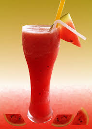
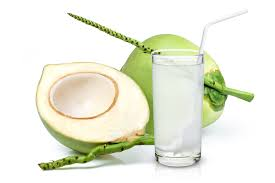
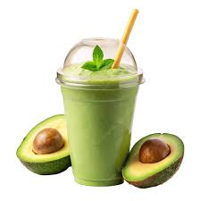

|
น้ำส้ม คือน้ำผลไม้ที่คั้นมาจากผลส้มตามชื่อ เป็นน้ำผลไม้ที่มีคนนิยมดื่มมาก เพราะเตรียมง่าย และให้คุณค่าทางอาหาร โดยเฉพาะอย่างยิ่งมีวิตามินซีสูง. น้ำส้ม. การเตรียมน้ำส้ม. 99 บาท |
|  |
น้ำแตงโมมีประโยชน์มาก ช่วยดับร้อน เสริมภูมิคุ้มกัน บำรุงผิวพรรณและสายตา ลดความเสี่ยงโรคหัวใจและมะเร็ง ฟื้นฟูกล้ามเนื้อหลังออกกำลังกาย และช่วยลดน้ำหนัก เพราะมีน้ำเยอะ แคลอรี่ต่ำ และอุดมด้วยสารต้านอนุมูลอิสระอย่างไลโคปีนและวิตามินซี รวมถึงสารซิทรูลีนที่ช่วยเรื่องระบบไหลเวียนเลือดและกล้ามเนื้อ. 110 บาท |
|  |
น้ำมะพร้าวเป็นเครื่องดื่มจากธรรมชาติ มีประโยชน์ต่อสุขภาพมากมาย เช่น ช่วยดับกระหายคลายร้อน ให้ความสดชื่น เพิ่มพลังงาน ทดแทนเกลือแร่หลังออกกำลังกาย และบำรุงผิวพรรณด้วยวิตามินแร่ธาตุ (โพแทสเซียม, แมกนีเซียม, วิตามินซี) และมีสารช่วยสร้างคอลลาเจน 69 บาท |
|  |
น้ำอะโวคาโดมีประโยชน์ต่อสุขภาพมากมาย เช่น บำรุงหัวใจด้วยไขมันดี ลดไขมันเลว (LDL) เพิ่มไขมันดี (HDL) ช่วยเรื่องระบบขับถ่ายเพราะมีไฟเบอร์สูง ต้านอนุมูลอิสระ บำรุงผิวพรรณและเส้นผมให้ชุ่มชื้น มีวิตามินและแร่ 120 บาท |
 |
น้ำสตรอว์เบอร์รีมีประโยชน์มากมาย เช่น เสริมสร้างภูมิคุ้มกันและผิวพรรณ (วิตามิน C สูง), บำรุงสมองและระบบประสาท, ช่วยลดความเสี่ยงโรคหัวใจ (โพแทสเซียม, ไฟเบอร์) และ ควบคุมความดันโลหิต (โพแทสเซียม, แมกนีเซียม), ต้านอนุมูลอิสระป้องกันมะเร็ง, ช่วยเรื่องระบบขับถ่าย (ไฟเบอร์) และเหมาะสำหรับผู้ที่ต้องการลดน้ำหนักเพราะแคลอรี่ต่ำ. 150 บาท |